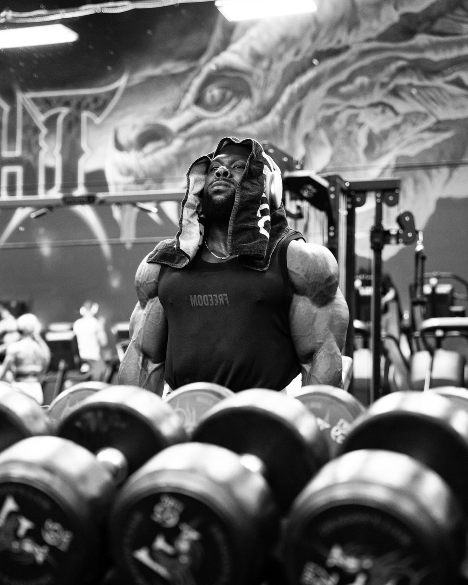

02 — SELECTED WORKS
FILMS
브랜드 캠페인 · 트레이닝 필름 · 버티컬 콘텐츠
ALL WORKS — DIRECTED · SHOT · EDITED · COLOR GRADED BY KIHYUN
INDEX — ALL WORKS전체 작업 — 행을 누르면 재생됩니다
CAMPAIGN & FILM
EVENT
INTERVIEW
FILMMAKER — PHYSIQUE & PERFORMANCE SPORTSSEOUL, KR
매일 자신을 넘어서는 사람들의 세계를 가장 가까이에서 기록해온 필름메이커.
기획–촬영–편집–컬러 전 과정을 소규모 팀으로 해결하는, 현장을 아는 크리에이티브 파트너.
01 — DOCUMENTARY SERIES
프리덤 애슬레틱 다큐멘터리 시리즈 — 유튜브 공개작 · 카드를 누르면 링크가 열립니다
ALL EPISODES — DIRECTED · SHOT · EDITED · COLOR GRADED BY KIHYUN
FILM STILLS — 다큐멘터리 스틸옆으로 넘겨 보세요
02 — SELECTED WORKS
브랜드 캠페인 · 트레이닝 필름 · 버티컬 콘텐츠
ALL WORKS — DIRECTED · SHOT · EDITED · COLOR GRADED BY KIHYUN
INDEX — ALL WORKS전체 작업 — 행을 누르면 재생됩니다
CAMPAIGN & FILM
EVENT
INTERVIEW
03 — PHOTOGRAPHY
포토그래피 — 서울 · 프라하 · 라스베이거스 · 보스턴 · 상하이
04 — PROFILE
김기현 — 필름메이커

스포츠가 가진 무게를 그대로 화면에 옮깁니다.
2024년 9월 Fadein Studio에 팀원으로 합류해, Freedom Athletic의 다큐멘터리 시리즈(더 워리어스 · 팀워크 · 레거시)를 만들었고, 미스터 올림피아와 EVLS 프라하 프로 현장에서 세계 최정상 애슬리트들을 카메라에 담았습니다. 국내에서는 프리덤 · 본투윈 · 제로투히어로 등과 함께 캠페인 · 모티베이셔널 필름 · 이벤트 리캡 · 인터뷰 콘텐츠 · 세미나 영상까지 폭넓게 작업해 왔습니다. 모든 작품에서 기획 · 연출부터 촬영, 편집, 컬러 그레이딩까지 전 과정을 다룹니다.
FEATURED ATHLETES
FADEIN STUDIO (2024.09 —)
05 — OUTRO